Building a Query
A query searches through your documents to find elements that satisfy certain criteria you provide, and shows them as a list or as numbers. These elements may be words, phrases, sentences, coded passages, memos, speaker turns, documents, and codes themselves. Typically, queries originate from questions about the nature of your documents. For example, in the project “Climate Debate”, you may wish to know which sentences contain crisis or deadline within passages coded as “Urgency” in the activists’ documents. You might also wonder which documents currently lack “Costs” codings, or which words occur within five words of an “Emotions” coding. When building a query, you use conditions, one for each part of the question, with the outcome displayed beneath the conditions.
Queries aim to help answer questions involving multiple criteria, like words, codes, and attributes together. If you simply want to explore the use of individual words, consider doing a word sketch instead (see Chapter 12, Word Sketch).
For further details on interpreting the output of queries and statistics used in them, refer to Chapter 16, Query Results and Statistics. More information on grammatical queries and Query from Selection is available in Chapter 17, Query Patterns and Discovery. Creating a query-based lens, analyzer, or document set is covered in Chapter 18, Using Query Results.
Key terms
The following glossary applies to all four query chapters.
- Scope refers to which part of your library is queried. Scope options include one document, a set, a project, and all projects.
- Unit refers to the entity that the query is searching for. This option can be selected in the Find condition; everything found in a query is referred to as a hit.
- Rule refers to a test applied upon one property of the hit, such as Lemma is climate or Stance is any of “Activist”.
- Field refers to the property that a rule operates on. Examples of fields include a word’s lemma, a sentence’s number, a coding’s code, and a document’s attributes.
- Lemma refers to the dictionary form of a word (e.g., warned and warns → warn), thus joining its forms together (see Chapter 11, The Grammar Inspector).
- Group refers to a collection of rules with an operator of All, Any, or None between them.
- A context row is similar to the regular rules except that it operates outside the hit and tests surrounding units, such as whether the hit overlaps with a passage coded “Urgency”.
- A Has row is a row that counts something belonging to the hit. For instance, it can count how many codings there are on a particular document.
- Category refers to labels and colors that get assigned to certain hits. Category becomes important mostly in lenses.
- Recipe refers to pre-made queries that one loads before modifying them according to need.
- Saved query refers to a query that is kept with a specific name for access within a document, set, project, or globally throughout LemmaLoom.
Where queries are stored
Queries may be constructed in one of three locations, all with the same builder, and which one to use depends mostly upon which documents you wish to query. When viewing a document, the inspector maintains a query next to your text. For queries across multiple documents in a set or entire project, use its Queries view; for many projects simultaneously, there is the Queries window.
| Place | How to open it | Scope |
|---|---|---|
| Query facet in the inspector | The Multimode tab of a document’s inspector, then Query | The document |
| Queries view | Queries under Project in the navigation sidebar, or Queries at the top of a set’s tab | The project or the set |
| Window ▸ Queries | The Window menu | All projects, one project, or one of its sets |
Queries will be kept wherever they were created until LemmaLoom quits. If you start building a query in the “Activists” set and switch to reading “Running Out of Time”, the unfinished query stays in that set. The Query facet of “Running Out of Time” also keeps its own query. Similarly, unsaved queries in a document’s Query facet may be lost once the document is closed. Therefore, it’s necessary to save all queries you want to keep (see Saving queries).
In a document
The Query facet interrogates the content of the document you are reading and stores its answers alongside the text. The figure below shows this for “Running Out of Time” with “Urgency Talk”, one of the saved queries of “Climate Debate”, loaded.
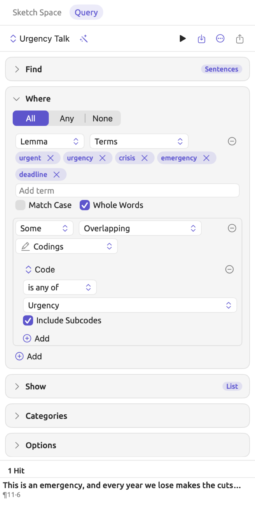
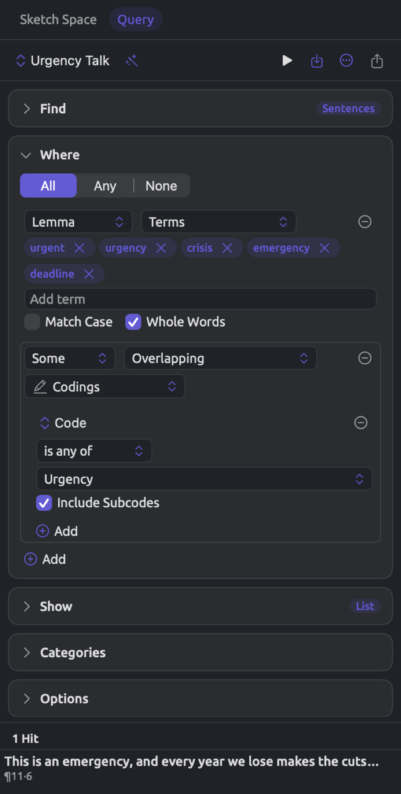
To open the Query facet:
- Open the document.
- Choose View ▸ Inspector ▸ Multimode (⌥⌘4). The inspector appears with the Multimode tab selected.
- Click Query at the top of the tab.
The inspector’s width allows only one open condition at a time. When you click a condition to reveal its contents, the previously open condition collapses. At the start, the Where condition is already open. The area below the conditions shows query results. You may move the divider line between the builder and result areas. Clicking a hit scrolls the reader to display the hit’s passage.
If any changes occur to the text, indexing, or codings of a document where a query resides, then that query executes anew automatically.
In a set or the project
To access the Queries view of a set:
- Click the set under Sets in the sidebar. The set opens in a tab of its own.
- In the row of buttons at the top of the tab, click Queries. In a narrow window the row is a menu; choose Queries from it.
Click Queries under Project in the sidebar to open the Queries view for your whole project. Like a set, a tag in the sidebar opens in a tab that has a Queries view.
This view gives the builder plenty of room. At the very top is a single header row with access to the menu of your saved queries, a query search field, and the Run Query and Save buttons (see The builder below). Below this header row is a narrow column on the left listing your saved queries, followed by the recipes, while the builder takes up all the room that remains. Results will span the entire width directly below everything, and you can adjust the room each part gets using a divider in between. The Find, Where, and Show conditions begin expanded upon loading; if you have the Pattern condition visible, this condition starts expanded too. Each of these conditions expands and collapses individually. When you double-click a result hit, the document opens in a preview tab and scrolls directly to that passage.
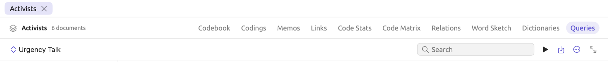
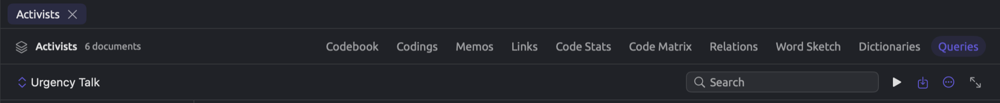
Should you need more space for your query, or want to leave it open next to the reader, click Open in a window, the button with two diagonal arrows at the right end of the header row. Alternatively, you could right-click on the tab itself and click Open in New Window. The Queries window will appear containing a duplicate copy of the current query, including any changes you haven’t yet saved. The set or project keeps its own copy.
The Queries window
The Queries window is the place for queries across all of your projects. It is also meant for having your queries of projects or sets opened alongside your reader at once. Open the Queries window via Window ▸ Queries, or bring it to the front if it is already open. Queries windows share the very same interface as Queries views, with a scope menu located on the left edge of their headers. This menu provides options for All Projects, your projects by name, and the sets from your active project, displayed as “Climate Debate › Activists”. Upon first opening the window, the selected scope is All Projects and your query builder contains an empty query. Selecting another scope leaves the current query inside your query builder; however, it will switch its focus toward analyzing the selected scope’s documents.
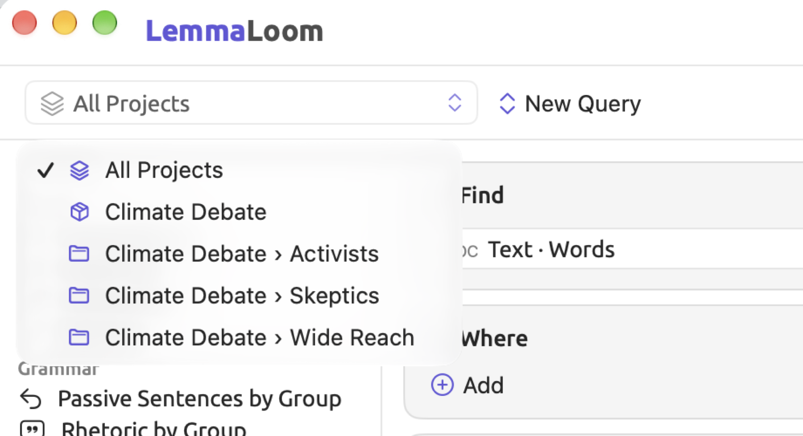
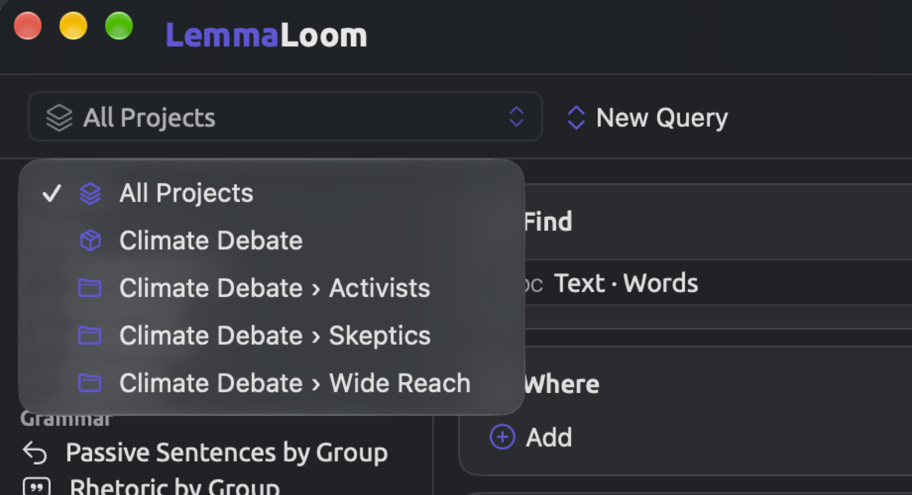
Only when the selected scope is All Projects can you refer to a document’s Project field and/or group results by projects. For more details on cross-project features, check out Working across projects in Chapter 3, Projects and Documents.
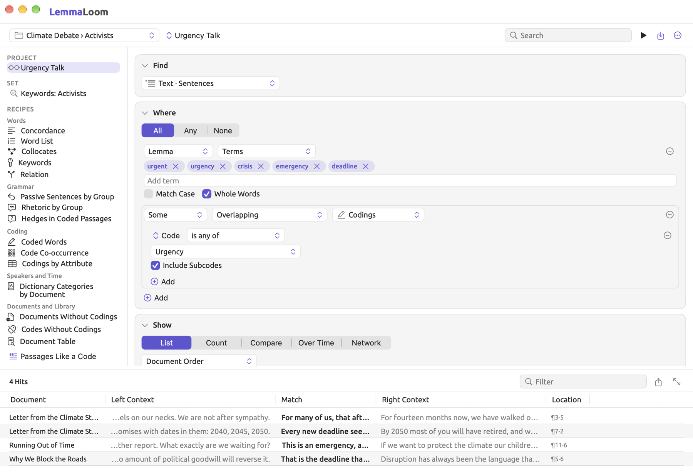
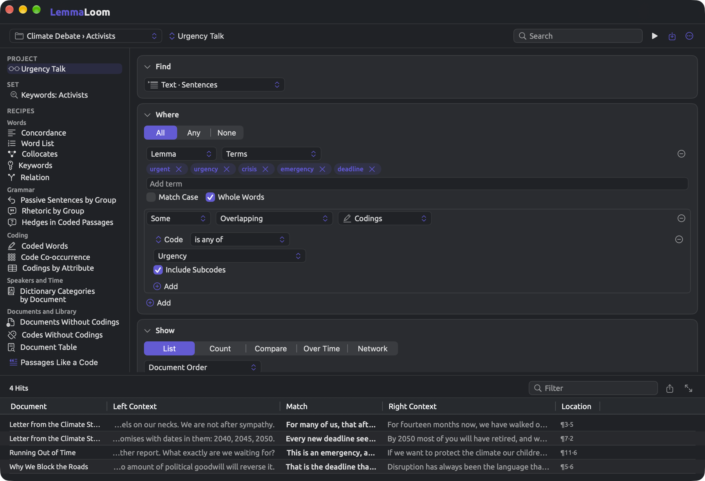
Working simultaneously with two queries, such as a query and its variant, can be accomplished by choosing New Window from the Actions menu of a Queries window. Actions appears as a circled ellipsis button in the header row of any Queries window. The new window starts with a new query in the same scope. Any query currently displayed in such a window will be lost upon closing the window unless saved beforehand.
Scopes
Scope also determines what offerings are made by the builder. Rules related to attributes of a document, for instance, come up when queries look at multiple documents.
| Document | Set | Project | All Projects | |
|---|---|---|---|---|
| Documents read | That document | The set’s original documents | The project’s original documents | The original documents of every project |
| Document fields in rules | No | Yes | Yes | Yes |
| Set field | No | Yes | Yes | No |
| Project field | No | No | No | Yes |
| Library units | Codes, Tags, and Dictionary Terms | All except Projects | All except Projects | All |
| Compare in the Show condition | No | Yes | Yes | Yes |
| Keywords in the Show condition | No | Yes | Yes, compared with one of its sets | No |
| Corpus option | No | Yes | Yes | Yes |
Library units locate items; these items may include codes or documents, but never passages (see Choosing what to find).
When querying a document, LemmaLoom reads it whether it is an original or a translation. Sets and projects are queried against the originals only; to query against translations, change the menu showing Originals in the Options condition (see Options). Smart sets like “Wide Reach” function as scopes, and the members of that smart set are found again every time the query runs.
A first query
In this example, you recreate “Urgency Talk”, which is provided in the example project. The query looks for any sentence containing either urgent, urgency, crisis, emergency, or deadline and overlapping with a passage coded “Urgency” within any document in the set of activists’ texts. Once you recreate your version of the query, you’ll save it separately, allowing comparison later on.
- Click “Activists” under Sets in the navigation sidebar, then click Queries at the top of the set’s tab.
- In the Find condition, choose Text · Sentences.
- In the Where condition, click Add and choose Add Text. A text row appears, set to Word and Terms.
- Change Word to Lemma, so that plural forms such as deadlines count as well.
- Click in Add term, type
urgent, urgency, crisis, emergency, deadline, and press Return. Each term is listed on its own. - Click Add again and choose Add Context. Leave the row at Some, Overlapping, and Codings.
- Click the Add button inside the context row and choose Add Rule.
- Click the rule’s field and choose Code from the Coding section of the menu. The comparison becomes is any of.
- Click the value, which shows None, and check “Urgency”. Include Subcodes is already checked, so codings with “Deadlines” and “Tipping Points” count as well.
Your results list will automatically get populated with sentences as you work on a small set like “Activists”, since such a small set will automatically run its query whenever the query is changed (see Running a query below). By clicking Query Text, you may view the actual query text:
Find Sentences
Where Lemma contains "urgent", "urgency", "crisis", "emergency", "deadline" and Some Overlapping Codings (Code is any of "Urgency")
Show List
To retain your query:
- Open the Save menu (the square with an arrow pointing into it) and choose Save as Lens….
- Type
Urgency Talk 2in Name. LemmaLoom accepts a name that is already taken, but two queries both called “Urgency Talk” would be hard to tell apart. - Choose Project in Available In and click Save.
Your query is available in each Queries view of your project and in Query facets on all of your documents right alongside “Urgency Talk”. You may select it as a lens in your reader’s lens menu as well (see Chapter 18, Using Query Results); when comparing to the original, you would select “Urgency Talk” from the query’s name at the left of the header, or click it in the left-hand column.
Begin by selecting your desired unit from the Find condition, then add rules in your Where condition step by step while noting the effect of each added rule. If any particular rule causes you to lose hits unexpectedly, modify your query accordingly.
The builder
The header row includes, from left to right:
- the query’s name, which acts as a menu to access the saved queries available here, and New Query sits at the bottom. The presence of a dot next to the name (e.g., “Urgency Talk” •) indicates that you made unsaved edits to that particular query;
- a search field, which restricts the list of saved queries and recipes on the left-hand side to those including your typed string in their names;
- Run Query (a triangle icon), which changes to Stop while the query runs;
- Save (an icon of a square with an arrow going inside);
- Actions (a circled three dots icon), which provides commands on the results, such as Create Set from Hits;
- Open in a window (diagonal double arrows), within the Queries view of a set or the project.
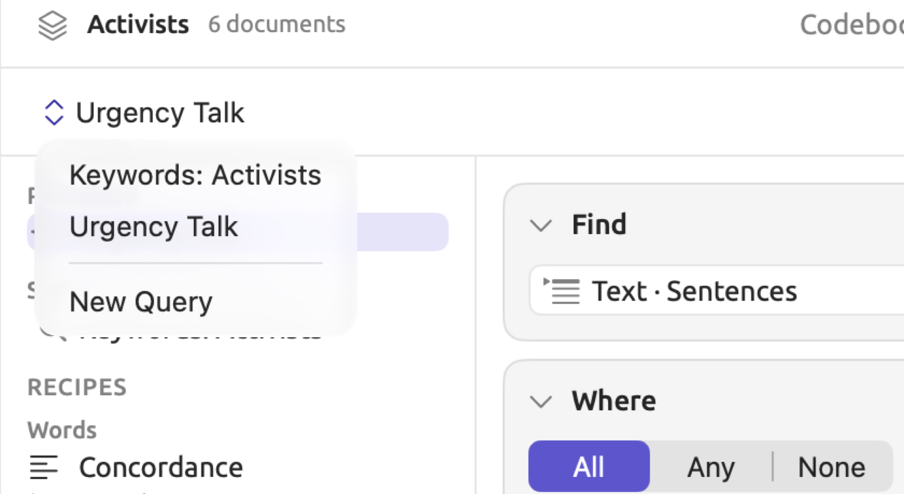
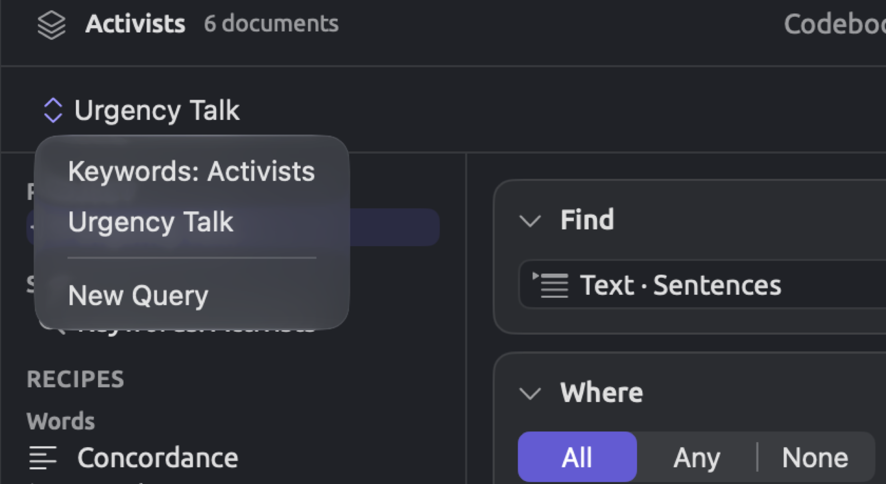
For Queries windows specifically, there will be a scope menu at the left of the header row. When the window is narrow enough, the Run Query, Save, and Actions icons go onto a second row below the header. Lastly, Export (square with an arrow pointing upwards) resides in the bar above the results when there are actually results (see Exporting results in Chapter 16, Query Results and Statistics).
In the inspector’s Query facet, the header includes the query’s name, Recipes icon (wand), Run Query, Save, Actions, and Export. The header will potentially wrap onto two lines depending on the inspector’s width.
After the header come the conditions, which are:
| Condition | What it holds |
|---|---|
| Find | The unit, and for Text Matches the text to look for |
| Pattern | A sequence, dependency, or phrase pattern, shown only for Pattern Matches |
| Where | Rules, groups, text, context, and Has rows |
| Show | How the results are presented, such as a list, counts, or a comparison |
| Categories | Labels and colors for hits |
| Options | Translations, coded memos, and how many hits a list keeps |
| Query Text | The whole query written out as text |
On a closed condition, the right side shows a summary, such as the unit, type of result, or number of rules or categories (e.g., 3 rules).
When starting a query using the command Edit ▸ Query from Selection, a row of options based on the selected terms will appear above the conditions. More information regarding this option can be found in Query from Selection in Chapter 17, Query Patterns and Discovery.
Choosing what to find
Each row of the results represents the unit of analysis, meaning whatever you want to read or count. Sentences tend to work best if you need to find something regarding your topic, whereas codings should be used for any questions related to your own codings.
From the dropdown list under Find, the units will appear according to kind, with each entry reading as kind and unit, e.g., Text · Sentences or Annotations · Codings. By default, a new query retrieves Text · Words and shows a List.
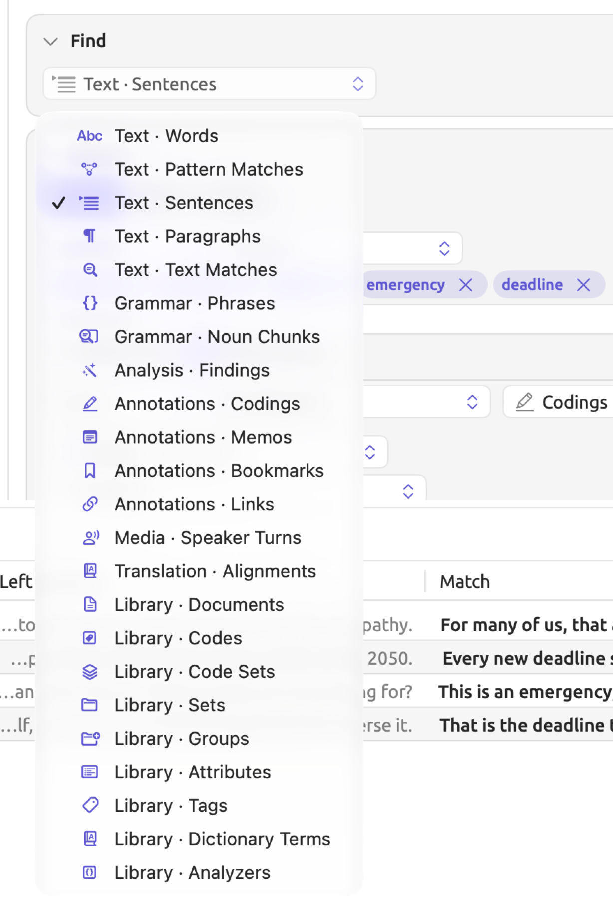
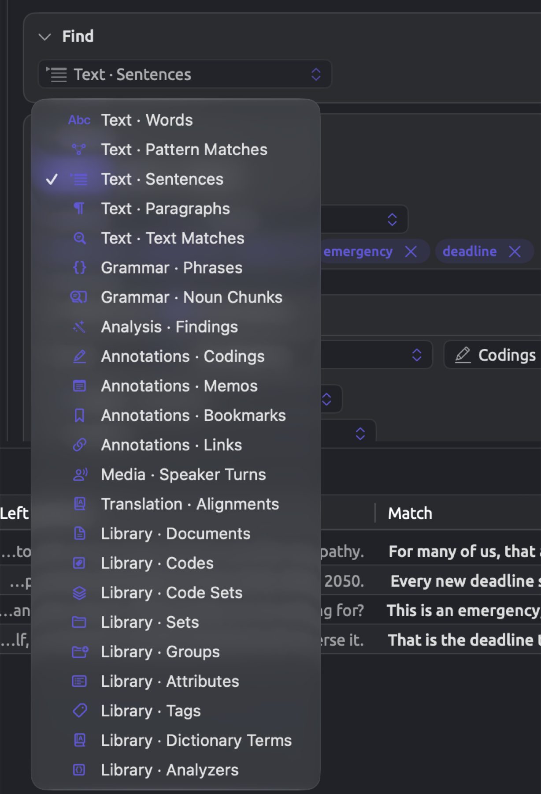
| Kind | Unit | One hit is |
|---|---|---|
| Text | Words | A word or a punctuation mark |
| Text | Pattern Matches | A stretch of text that matches the Pattern condition |
| Text | Sentences | A sentence |
| Text | Paragraphs | A paragraph |
| Text | Text Matches | One occurrence of the text set in the Find condition |
| Grammar | Phrases | A phrase from the sentence’s phrase structure, such as a noun phrase or a prepositional phrase |
| Grammar | Noun Chunks | A noun with the words that belong to it, such as the climate crisis |
| Analysis | Findings | A passage annotated by the Cohesion, Metadiscourse, or Rhetoric analyzer, or by one of your own analyzers |
| Annotations | Codings | A coded passage |
| Annotations | Memos | A memo. A memo on the whole document covers the whole text |
| Annotations | Bookmarks | A bookmark |
| Annotations | Links | One end of a link |
| Media | Speaker Turns | A turn in a transcript |
| Translation | Alignments | A segment of a document paired with its counterpart in a translation |
| Library | Documents, Codes, Code Sets, Sets, Groups, Attributes, Tags, Dictionary Terms, Analyzers, Projects | One item of that kind |
Words, Pattern Matches, Sentences, Phrases, Noun Chunks, and Findings will require the document to be indexed prior to analysis. An unindexed document will be ignored in the process, with the number beside the hit count, such as 5 of 6, indicating how many documents were read. Other units do not need indexing. See Chapter 21, Analysis and Indexing for specifics on the benefits of indexing in each language.
Library units locate items rather than passages. As a consequence, their result tables contain one row per found item, rather than one per found passage. Document results display the document title, authors, date, language, group membership, tags, and token count. Code columns such as Codings and Coded Documents restrict their counts to the query’s scope and to the codes themselves. With regard to the “Activists” set, these code columns restrict their scope to the codings within activist texts.
When switching units, all incompatible rules are dropped. This includes incompatible Group By keys, too. The sorting reverts to Document Order; likewise, the Show condition reverts to List if it was previously set to something that is now unavailable due to the switch. Context and text rows, as well as Has rows, remain in place and need checking to ensure compatibility with the current unit. A Has row will only be compatible with the units listed under Has. Similarly, a context row will only work for passage units and Documents. A row left over from the old unit empties the results, so remove it.
The Pattern condition
The Pattern Matches unit brings the Pattern condition into the interface below the Find condition. Patterns describe stretches of text according to their grammar, thus making them useful for queries regarding constructions such as the pairing of verbs and objects regardless of what actual lexical content they may take on. The Pattern condition supports three different modes, including Sequence (a sequence of words separated by optional gaps), Dependency (words connected by grammatical dependency relationships), and Phrase (of a particular phrasal type). For more information on patterns, see Chapter 17, Query Patterns and Discovery.
Rules in the Where condition
Hit criteria are defined by the rows in the Where condition. An initially empty Where condition considers everything in the scope as hits; therefore, an empty query over Sentences considers all sentences as hits.
At the bottom of the condition lies the Add menu for five possible types of rows to be added:
- Add Rule adds a rule on one field.
- Add Group adds a sub-group of rows (see Groups below).
- Add Text adds a search criterion over text content (see Matching text).
- Add Context adds a criterion based on context, specifically on other units surrounding the hit (see Context); it is available only to units that represent text passages.
- Add Has adds a criterion based on items associated with the hit (see Has); it is available only to documents, codes, code sets, sets, groups, tags, and projects.
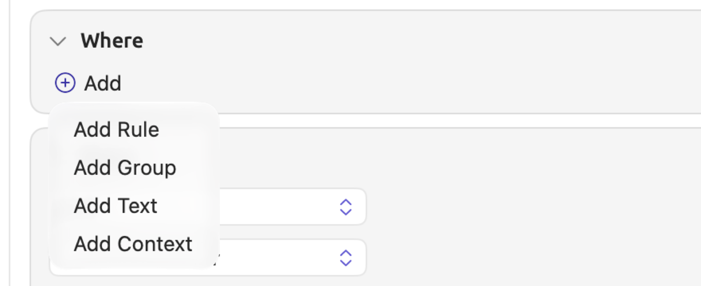
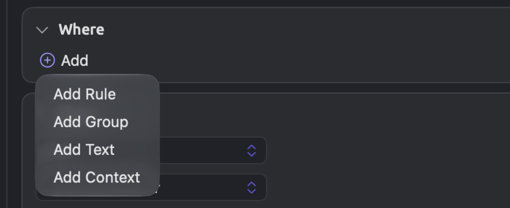
Clicking the minus button next to a row deletes it from the condition.
Adding a rule
Both “Stance” and “Readership” are attributes of each document in the “Climate Debate” project. By setting rules on both attributes within a Library · Documents query in the project, you can extract only the widely read activist documents. The query identifies two documents, “Running Out of Time” and “Letter from the Climate Strike”. The query text would look like this:
Find Documents
Where "Stance" is any of "Activist" and "Readership" is at least 100000
Show List
To add a rule:
- In Where, click Add and choose Add Rule. A rule appears with a field already chosen, outlined in red because it has no value yet.
- Click the field and choose the property to test, such as Attribute ▸ Stance.
- Choose a comparison, such as is any of or is at least.
- Enter the value in Value, or click the value and check the ones that should count.
When there is more than one row, a control with options for All, Any, and None appears at the top of the condition. Under All, as in the previous example’s query, the document needs to satisfy both rules. Rules with blank values (e.g., Readership is at least with an empty Value field) are not considered until values are entered.
Fields
The field menu gives you access to fields relevant to your unit in sections. Fields in your current unit appear first, followed by fields in higher-level units containing the former. If your unit is Words, the five sections would be Word, Sentence, Paragraph, Passage, and Document. When you use a field from outside of the current unit’s section, the name of its section will precede it; an example would be Sentence · Passive when searching among words.
Three items in particular give you access to another menu. Attribute provides the list of document attributes in your current project. Some examples include “Stance” and “Publication Date”. Statistic offers the list of statistical properties of documents covered in Chapter 10, The Text Inspector. These properties include Avg. sentence length and Lexical density. Code Attribute, under Coding, provides the attributes of codes, whose values you may define per coding.
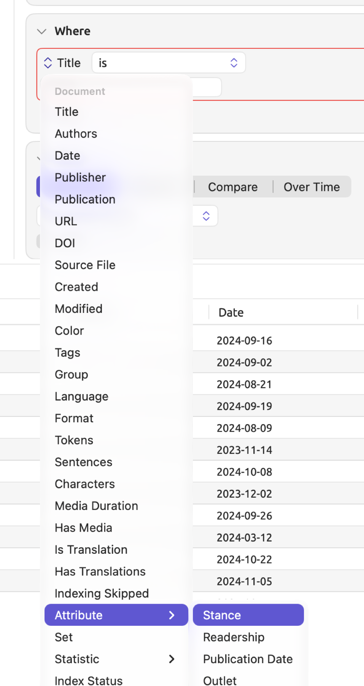
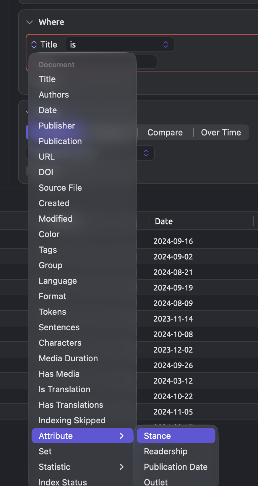
| Section | Fields | Offered when you find |
|---|---|---|
| Word | Word, Lemma, Word Class, Tag, Dependency, Morphology, Stopword, Is Word, Is Punctuation, Position in Sentence, Letters, Head Lemma, Head Word Class, Function, Part of Speech, Phrase Category, Negator, In Negation Scope, Connective, Modality, Topological Field, Particle | Words |
| Sentence | Sentence Text, Sentence Words, Sentence Number, Root Lemma, Root Word Class, Passive | Words, Pattern Matches, Sentences, Phrases, Noun Chunks, Findings |
| Paragraph | Paragraph Text, Paragraph Number | Every passage unit except Memos, Links, and Alignments |
| Passage | Text, Length (in characters) | Every passage unit |
| Phrase | Phrase Label, Form, Width, Phrase Function, Phrase Head | Phrases, Noun Chunks |
| Finding | Analyzer, Finding, Note | Findings |
| Coding | Code, Code Attribute, Length, Created, Snippet, Coded Memo | Codings |
| Memo | Content, Attached To, Linked Code, Tags, Created, Modified | Memos |
| Bookmark | Color, Comment, Created, Modified | Bookmarks |
| Link | Relation, Comment, Color, Tags, Created, Other Document, Endpoint | Links |
| Speaker Turn | Speaker, Start, End, Duration | Speaker Turns |
| Alignment | Translation Language, Source Text, Translation Text | Alignments |
| Document | Title, Authors, Date, Publisher, Publication, URL, DOI, Source File, Created, Modified, Color, Tags, Group, Language, Format, Tokens, Sentences, Characters, Media Duration, Has Media, Is Translation, Has Translations, Indexing Skipped, Attribute, Set, Statistic, Index Status, Project | Documents and every passage unit, in sets, projects, and All Projects |
| Code | Name, Path, Depth, Parent, Color, Style, Scope, Codable, Description, Tags, Code Set, Codings, Coded Documents | Codes |
| Code Set | Name, Codes | Code Sets |
| Set | Name, Kind, Documents, Color | Sets |
| Group | Name, Documents | Groups |
| Attribute | Name, Type, Owner, Description, Choices, Values Set | Attributes |
| Tag | Name, Uses, Projects, Documents, Codes | Tags |
| Dictionary Term | Term, Category, Dictionary, Hits | Dictionary Terms |
| Analyzer | Name, Languages, Legend Keys | Analyzers |
| Project | Name, Color, Tags, Documents | Projects |
Word fields derive from indexing. Part of Speech encompasses the finer classes of Word Class, where proper nouns and auxiliaries fall under the larger categories of nouns and verbs respectively. If you require additional guidance with regard to parts of speech and word classes, see Chapter 11, The Grammar Inspector. Modality, Connective, Topological Field (German), and Particle (Chinese) lens annotations of a document are explained in Chapter 6, Lenses.
Comparisons and values
Comparisons allowed by rules depend on the type of values contained within the field.
| Kind of field | Examples | Comparisons |
|---|---|---|
| Text | Title, Lemma, Comment, Outlet | is, is not, contains, does not contain, matches, is empty, is not empty |
| Number | Tokens, Length, Readership | is, is not, is less than, is at most, is greater than, is at least, is between, is empty, is not empty |
| Duration | Media Duration, Start, Duration | The same as for numbers |
| Date | Date, Created, Publication Date | is, is before, is after, is on or after, is on or before, is between, is empty, is not empty |
| Yes or no | Passive, Stopword, Has Media | is true, is false, is empty |
| One value from a list | Code, Word Class, Group, Speaker, Color, Stance | is any of, is none of, is empty, is not empty |
| Several values | Tags | has any of, has all of, has none of, is empty, is not empty |
| Language and format | Language, Format | is any of, is none of |
Values are entered in relation to their respective types:
- Text and numeric values are provided directly to the Value field. is between displays two fields.
- Date values can be selected from a date picker. It begins by default on the current day, although the rule will not take effect until you modify it.
- Duration values should be entered as minutes and seconds (
12:30) or as hours, minutes, and seconds (1:05:00). Single numbers represent seconds. - List item values appear as checkboxes in a small panel that opens when you click the value; once checked, the value will show “Activist” or “Skeptic” etc.; None indicates that none are currently selected.
Text values are case insensitive when compared in LemmaLoom. Differences such as diacritics or wide/narrow variations of characters (Ａ vs. A) do not matter either. As such, if you search with Title contains climate, you get results such as “Letter from the Climate Strike”. matches looks for a match on the whole value and allows wildcards (* replaces sequences, while ? replaces any single character). Title matches Wh? * gives you “Who Pays for the Transition” and “Why We Block the Roads”. Meanwhile, Title matches *Time yields “Running Out of Time”, yet does not match “Running Out of Time (German)” because it requires the pattern to match the whole title value.
Codes are listed with their paths in the Code field, e.g., “Urgency › Deadlines”. Within sets or projects, a code unique to a particular document comes with the document’s title attached to it. Right underneath Code rules sits an Include Subcodes option, which is enabled by default, meaning that “Emotions” includes its subcodes “Fear” and “Hope”.
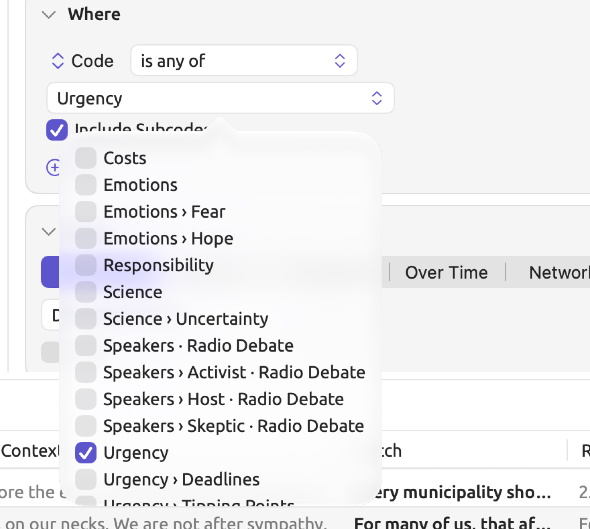
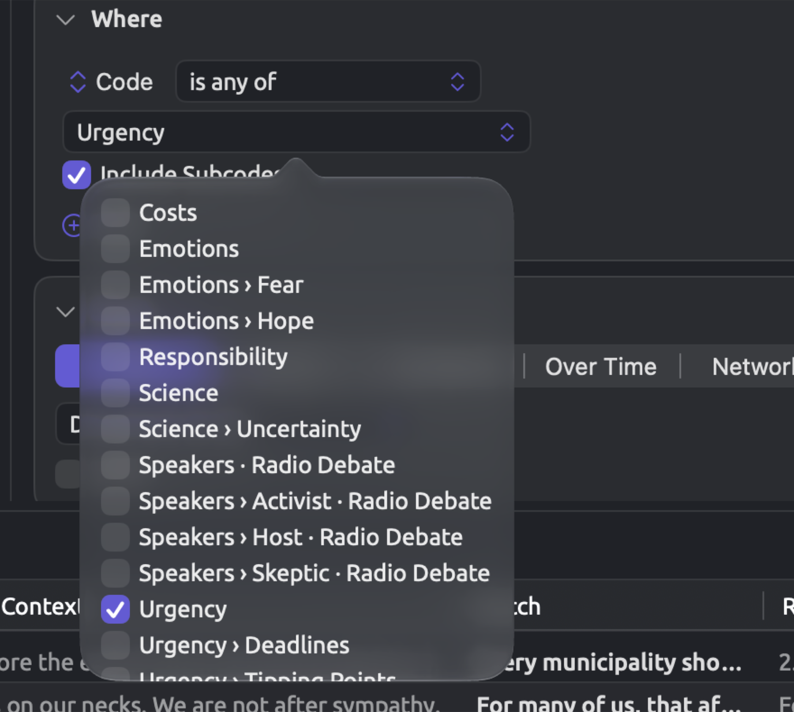
Tag (a word’s grammatical tag, not your own tags) lists the tag sets used for languages within the scope. Likewise, Dependency lists dependency relation sets and Phrase Label lists phrase label sets. When the scope contains more than one language, the entries in these three fields carry language badges, since English, German, and Chinese use different tag sets.
Groups
The control at the top of conditions and groups (All, Any, or None) determines what happens to those hits that comply with their rules. In other words, this control defines whether the condition/group keeps all hits complying with all the rules it holds (All), with any of the rules it holds (Any), or with none of the rules (None).
The feature that makes groups special compared to regular conditions is their ability to combine an or within an and. Say, for example, that one wishes to locate “Emotions” codings in widely read texts of the “Climate Debate” project and in skeptic texts regardless of their readership. One may use a query targeting Annotations · Codings in “Climate Debate”. Within that query, there exists a rule for when Code is any of “Emotions”, with Include Subcodes checked. Underneath this rule lies a group set to Any. This group contains two criteria, namely that Readership is at least 100,000, and that Stance is any of “Skeptic”. The condition stays at All. The query text shows the group in parentheses:
Find Codings
Where Code is any of "Emotions" and ("Readership" is at least 100000 or "Stance" is any of "Skeptic")
Show List
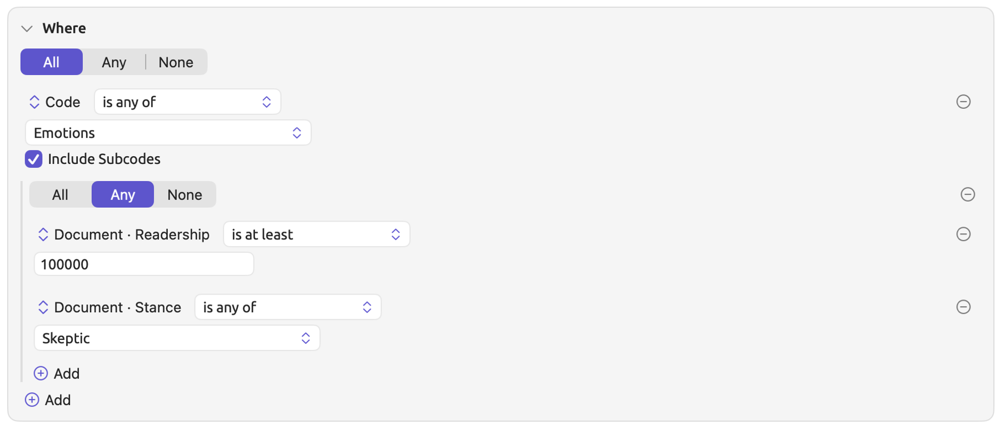
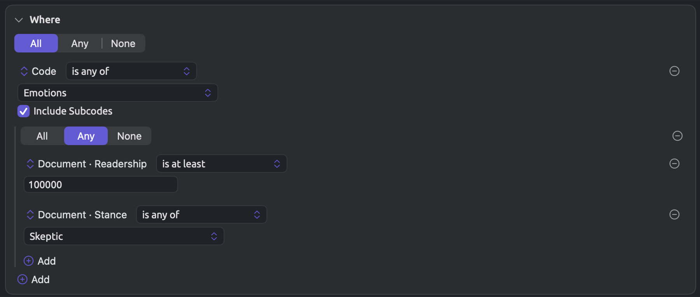
To add a group:
- In Where, click Add and choose Add Group. The new group starts with Any and one rule.
- Set up that rule as you would any other.
- To add more rules to the group, click the group’s own Add button and choose Add Rule.
A rule cannot exceed nesting of three layers, although the Add menu permits nesting beyond the limit. While having a sub-group inside of a group is fine, nesting a group inside of that sub-group is considered nesting too deeply. Context and Has rows each account for two layers. On the Where condition itself, these rows may hold only rules. Inside groups, on the other hand, rules within these rows would be nesting too deeply already. Nesting too deeply results in the rule having a red outline (Too deeply nested), and the query waits until it is removed.
Frozen lists
A frozen list is a list of words stored inside the query itself. You can create a frozen list from the results of Collocates or Keywords queries, via the Actions menu option Freeze Values (see Chapter 18, Using Query Results). Passages Like a Code also creates a frozen list (see Passages Like a Code in Chapter 17, Query Patterns and Discovery).
Freeze Values replaces the existing query with a new, unsaved Words query. It has only one rule, comparing the field the query counted by (Lemma, Word, or Word Class) to the words in the list. This new query and frozen list retain the name of the query you froze. Up to 200 words may be saved, each paired with its score from the results. Your query text shows the frozen list by name, such as Lemma is any of "Keywords: Activists".
The words inside these lists won’t change, even as your documents evolve. To see where the activists’ keywords appear in the skeptics’ texts, save the frozen query for the project and open it in the “Skeptics” set.
When looking at the Where condition for a query with a frozen list, Lemma and Word rules will appear with the setting None selected. If you have Word Class rules, your frozen list will actually be evaluated against the available word classes and each class will either be checked or unchecked accordingly. Checking/unchecking individual classes removes the frozen list and uses your selection instead. Removing your frozen list from a query requires removing its rule.

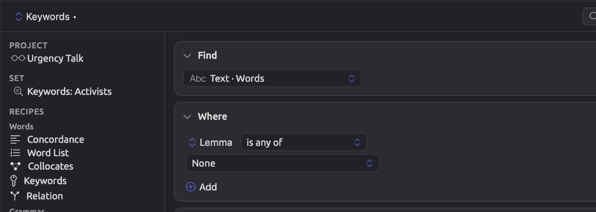
Queries with frozen lists offer an additional sort order option for their resulting lists, Score, which ranks passages by the frozen words they contain. For more information on the score, see Chapter 17, Query Patterns and Discovery.
Matching text
Two methods are possible for searching either words or characters. When you use Add Text in the Where condition, you add a text row to your query’s rules as a hit requirement. As a consequence, your hit sentences contain one of your terms. If you use Text · Text Matches in Find, however, each match becomes a separate hit. The same text row appears in the Find condition.
Text rows contain two menus. Through the first menu, you define which element your terms should match, and through the second menu, starting with Terms, where those terms come from. After entering your terms under the menus, use the two checkboxes Match Case and Whole Words.
What to compare with
| First menu | Compares each term with | Capitals | Accents |
|---|---|---|---|
| Word | Each word as it is written | Ignored, unless Match Case is checked | Ignored, unless Match Case is checked |
| Word Form | Each word’s dictionary form | Ignored | Significant |
| Lemma | Each word’s dictionary form | Ignored | Ignored |
| Text | The characters of the text, wherever they occur | Ignored, unless Match Case is checked | Ignored |
Lemma is normally going to give the best results for words. This is because all inflections of a given word will be matched in a search. Word is better suited if knowing precisely what form occurred is important for your analysis. This includes, for instance, singling out a word such as emergency as opposed to emergencies. Word Form does exactly the same as Lemma, except that accents are differentiated; thus, German schon and schön are considered different in Word Form but not in Lemma.
All three of these options (Word Form, Word, and Lemma) match full-word occurrences according to indexing. Multiword terms must perfectly overlap adjacent words in order, uninterrupted and within a single sentence. The hyphen symbol is removed before matching, meaning that searching for carbon-neutral will return results containing both carbon-neutral and carbon neutral. If there is no indexing on a document, all three behave the same as choosing Text.
Text matches literal instances of symbols instead of full-word matches based off of indexing, as Word Form, Word, and Lemma do. Choosing Whole Words restricts matches so that they occur only when no preceding or following character position contains letters or numerals. Unselecting it allows searching for words nested within longer sequences of characters. Whole Words influences Text exclusively.
Every word of a term must be typed in its dictionary form for both Word Form and Lemma; this implies typing the term it seem rather than it seems, since its dictionary form is seem. Or use Word instead.
New text rows in the Where condition default to Word when units require indexing such as Sentences, while for other units, such as Codings, they default to Text. Similarly, Text Matches defaults to Text.
In searching Codes or Sets, text rows locate matches regardless of case or accent. They search for occurrences of any plain terms within the names, so point matches “Tipping Points”. Searching Documents uses a text row to scan document texts. Of the library units, text rows are applicable solely to these three.
Terms
In Terms mode, you manually input terms.
- Click in Add term.
- Type a term and press Return. To add several at once, separate them with commas, as in
crisis, emergency, deadline. - To remove a term, click the cross beside it.
Here terms are alternate criteria such that a hit satisfies at least one of them. If a text row contains no terms, then LemmaLoom disregards the row.
Dictionaries
In Dictionary mode, the terms come straight out of one of your dictionaries in the project. For example, “Climate Debate” has a dictionary labeled “Hedges” containing two categories, “Approximators” and “Shields”. The figure below depicts querying “Shields” in a text row.
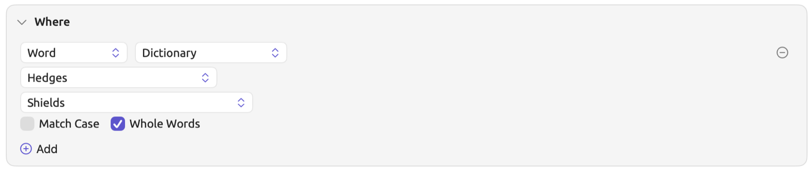
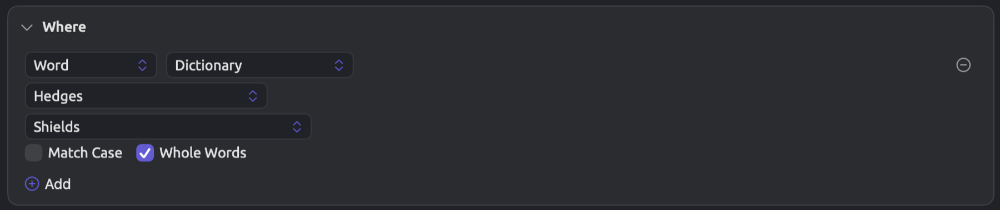
To search with a dictionary:
- In the second menu, choose Dictionary.
- Choose the dictionary from the menu that appears.
- To limit the search to some categories, click the control below the dictionary and check them in the panel that opens. With nothing checked, the control shows None and every category is used.
The dictionary is accessed with each run of your query; therefore, whenever you add a term to “Hedges”, it becomes searchable on the next execution. The first menu and both checkboxes pertain to all of your terms within your dictionary. The dictionary “Hedges” consists of phrasings as they are spoken, like it seems or more or less. Thus, Word is a better choice than Lemma for this particular dictionary. Further details regarding dictionary matches in the dictionary lens can be found in Chapter 19, Dictionaries.
Upon finding Text Matches via dictionaries, each matched instance also includes the dictionary category of the matched term. When a key row of the Show condition is set to Category, the matches will be counted based on their categories; this is how the Dictionary Categories by Document recipe works.
Regular expressions
A regular expression is a string pattern of characters. This is handy if you are looking for items that vary beyond what can be defined as a list of terms, such as spelling variations. The pattern models?, for example, would locate both the words model and models, since the ? sign indicates that the preceding character is optional; it will also match model in the word modelers. Similarly, \bheat[- ]?waves?\b will return results for heat wave, heat-wave, heatwave, and heat waves. In this instance, the [- ] pattern matches either a hyphen or space, and \b matches a word boundary. More building blocks are listed in Excluding text from indexing in Chapter 4, Importing Material.
- In the second menu, choose Regular Expression.
- Type the pattern in Pattern.
A regular expression will search all of the characters in your text regardless of the first menu option. Unless Match Case is checked, capitals are ignored; however, accents always count. Word boundaries must be specified by placing \b around your pattern. Patterns cannot exceed 1,000 characters in length. If LemmaLoom cannot read the pattern, it is highlighted with a red border and the query waits for correction. The results area says Invalid pattern, and so does the row when you hover the mouse pointer over it.
Chinese text
Since Chinese does not separate words with spaces, the beginning and end of a Chinese search term with Word, Word Form, or Lemma have to match word boundaries found during indexing.
Terms can consist of multiple words. The term 科学 (science) will match if the index identifies either 科学 as one word or 科 and 学 as two separate words. A longer word like 科学家 (scientist) is a different word for LemmaLoom. Any spaces in your term are disregarded.
If you choose Text, then LemmaLoom matches the occurrences of a Chinese term regardless of where in other words those characters occur. Whole Words does not apply here. If you are unsure how indexing splits a word, use Text.
Context
Context rows control whether hits stay or get discarded based on surrounding units. Context rows are typical means of relating your codes to text passages; they find, for example, the words inside passages you have coded with “Urgency”, or the sentences which remain uncoded. Context rows read as a phrase from left to right. So in the case of Some Overlapping Codings, LemmaLoom keeps any hits overlapping any coding. Below the row, you add rules for the other units. For example, the first query uses a context row with the rule Code is any of “Urgency”.
Each new context row begins with Some, Overlapping, and Codings.
In the first menu, you choose how many other units you require:
- Some denotes a minimum of one.
- No requires zero other units.
- At Least requires a minimum of the stepper number, ranging from 1 to 99.
- At Most allows no more than the stepper number, including zero as well.
The second menu sets the relationship between the units, while the third menu allows for specifying what the other units are, which can be any passage unit. Pattern Matches and Text Matches appear in the third menu only when Find uses that same unit. Changing the unit removes the rules under the row.
| Relation | The hit counts when it |
|---|---|
| Overlapping | Shares at least one character with the other unit |
| Inside | Lies wholly within the other unit |
| Containing | Wholly contains the other unit |
| Same Span As | Starts and ends exactly where the other unit does |
| In the Same Sentence As | Starts in the sentence where the other unit starts |
| In the Same Paragraph As | Starts in the paragraph where the other unit starts |
| In the Same Turn As | Lies, together with the other unit, inside one speaker turn |
| Near | Is no more than the set number of words away from the other unit, on either side |
| Before | Ends before the other unit starts, with no more than the set number of words between them |
| After | Starts after the other unit ends, with no more than the set number of words between them |
| Linked To | Overlaps one end of a link; the rules under the row test the link |
| Translated As | Overlaps a segment that is paired with a translation; the rules test that pairing |
The three relations, Near, Before, and After, all feature a distance stepper setting the number of words allowed between the two units, starting at 3, and ranging from 0 to 50 words. Only words count toward the distance. Any distance of 0 refers to the two units touching with no words separating them. Units that overlap will therefore always have a distance of 0. Near scans over sentence boundaries.
Context is always sourced from units other than the hit itself.
The document must first be indexed for the relations In the Same Sentence As, Near, Before, and After. The document must also have a transcript for the In the Same Turn As relation. A query making use of any of these relations will therefore locate hits only in such documents.
A query for Sentences featuring the No Overlapping Codings context row, and with no rules underneath it, returns sentences that have not been coded yet.
A query for Words in the project looking for child and children near emotion-related codings features the rule Lemma is child. The context row used in this case is Some Near Codings. The distance is set to 5 words. The row holds the rule Code is any of “Emotions”. The query text reads Lemma is "child" and Some Near 5 Codings (Code is any of "Emotions").
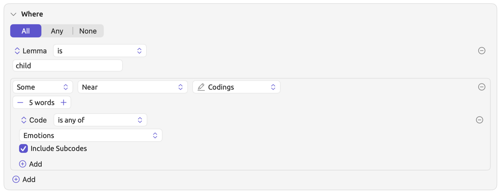
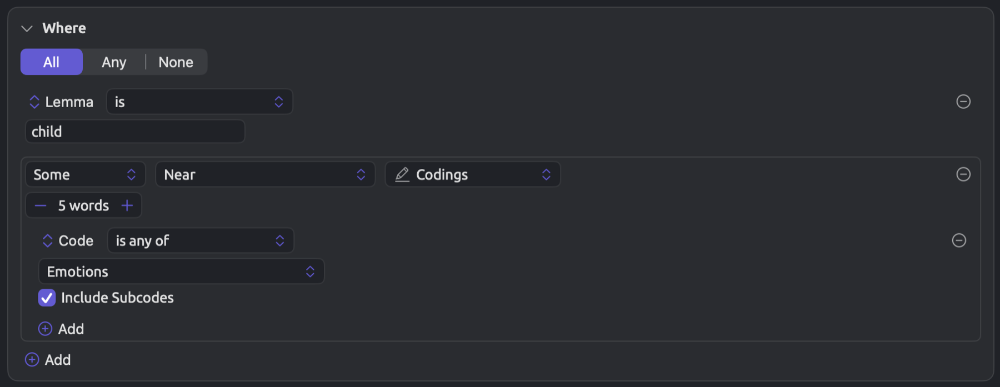
Linked To considers the links rather than the row unit. By choosing Links as the row unit, the rules listed below the row refer to the fields of the link, including Relation and Comment. Some Linked To Links with no row rules keeps each hit overlapping one endpoint of a link.
Translated As considers the relationship between a document and its translations. This exists only after translating the document (see Chapter 9, Translations and Split View). Alignments should be used as the row unit in order to consider Translation Language or Translation Text. In the Query facet of “Running Out of Time”, for instance, a query for Sentences may have a context row Some Translated As Alignments with the rule Translation Text contains Klima. It finds those English sentences with a German translation containing Klima.
Has
A Has row counts all items belonging to the hit, which include the codings of a document and the documents of a set. The Has row reads like a context row and helps you manage your coding progress, including keeping track of any documents you have not yet coded. For example, the Has No Codings row will find documents that have not been coded at all.
Add Has appears for the units listed in this table:
| When you find | Has can count |
|---|---|
| Documents | Codings, Memos, Bookmarks, Links, Speaker Turns, Findings, Alignments |
| Codes | Codings, Memos |
| Code Sets | Codes |
| Sets, Groups, Tags, Projects | Documents |
The quantity menu includes Some, No, At Least, and At Most, much like in a context row. The value for At Least and At Most ranges from 1 to 999. Below the row, rules narrow down which items are counted. Has No Codings with the rule Code is any of “Costs”, for instance, returns documents that do not contain a “Costs” coding, regardless of whether they have any other codings.
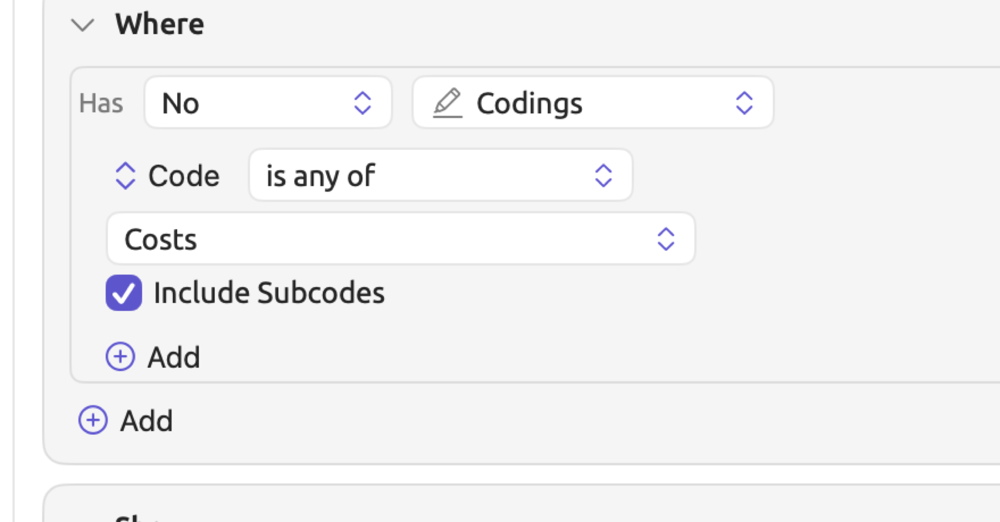
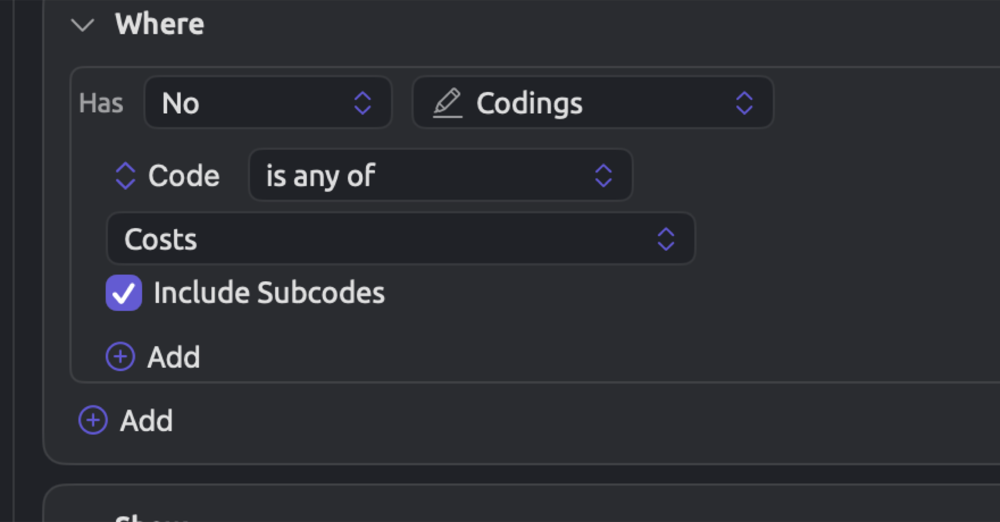
When finding codes, on the other hand, only codings within the scope and with the code itself are counted. In the “Skeptics” set, a query looking for Codes with Has At Least 5 Codings will return codes applied in skeptic documents five times or more. Assuming every “Urgency” passage has been coded with either “Deadlines” or “Tipping Points”, Has No Codings returns “Urgency”. Has Memos tallies up the number of memos linked to the code anywhere within the project’s documents, including those not in the scope.
Categories and Color By
Categories sort the hits into labeled, colored groups. If the query is used as a lens, then the categories annotate their hits using different colors and styles, and the categories are listed in the legend of that lens. Lists get a Category column, and Group By ▸ Category in the Show condition allows you to examine how many hits belong to which category.
In the “Climate Debate” project’s query “Urgency Talk”, for instance, you could add a category named “Crisis” containing a text row set to Lemma for crisis and emergency, and another category named “Deadline” containing a text row set to Lemma for deadline. With the query acting as a lens, it would annotate both types of urgency in separate colors.
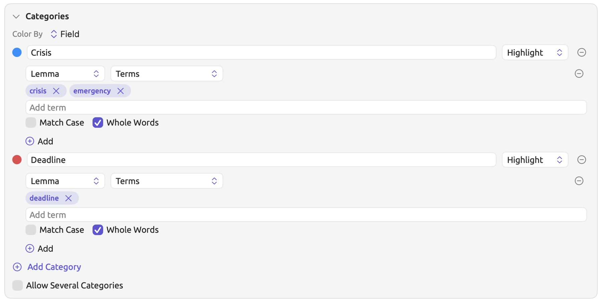
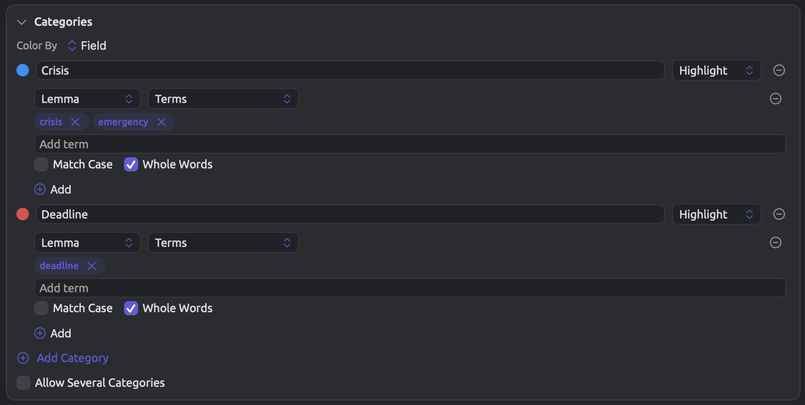
Categories consist of rules. To add one:
- Open the Categories condition and click Add Category. A row appears, named “Category 1”.
- Click the colored dot and choose a color.
- Replace “Category 1” with a name of your own.
- In the menu beside the name, choose Highlight or Underline.
- Add rules under the row, as in the Where condition.
With regard to the ordering of categories, each hit takes the first available category from the top whose rules the hit satisfies. Checking Allow Several Categories results in each hit receiving all the categories that apply to it. Thus, if a sentence mentions both crisis and deadline, then it would belong to both the “Crisis” and “Deadline” categories. If you create a category with no rules, it ends up with no hits. A hit that meets no category’s rules keeps an empty Category column. And finally, LemmaLoom ignores an incomplete rule; hence, a category whose only rule has no value yet takes every hit until the rule is filled.
The feature called Color By, at the top of the Categories condition, creates categories based on fields rather than based on rules. All the unique values of the field chosen in the menu beside it become distinct categories with unique colors. With Codings, Color By Code behaves analogously; it assigns a distinct color to each of the unique codes. Thus, if you wanted to see Speaker Turns categorized in “Radio Debate”, you could select Color By Speaker and distinguish “Host”, “Activist”, and “Skeptic”. To remove the Color By field, click the minus button next to it.
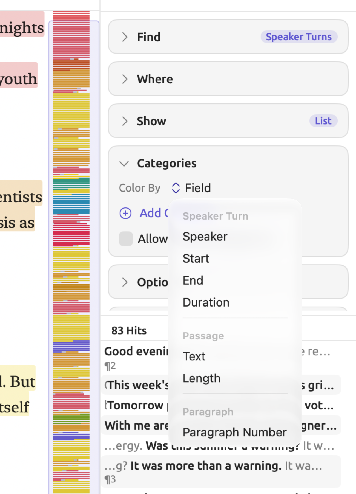
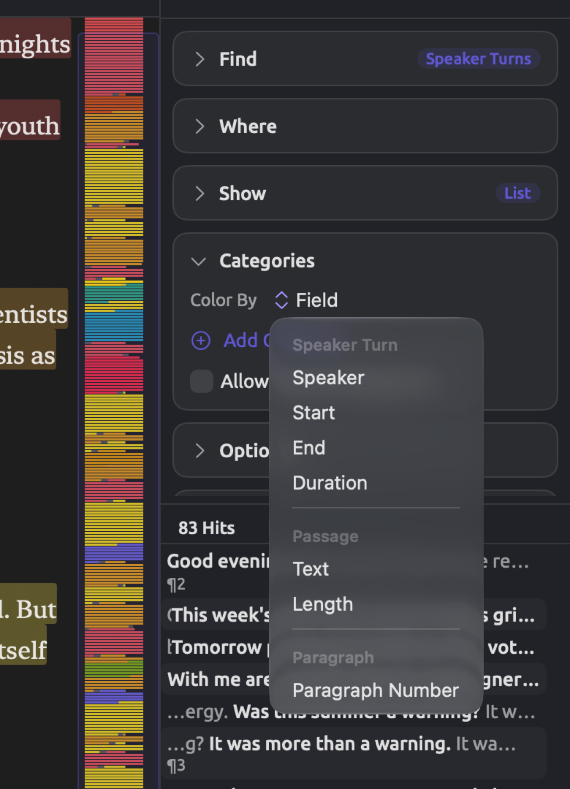
Should a query contain categories based on both rules and Color By, a hit will take the first applicable category from the rules, and from Color By only if no rule category fits it. When checking Allow Several Categories, the hit will receive all applicable categories including Color By.
Categories are automatically assigned the colors blue, red, green, orange, purple, pink, indigo, and yellow in succession, with Highlight styling; from the ninth on follows Underline styling. The maximum number of categories per query equals 16; once achieved, the Add Category button disappears. A lens displays a maximum of 16 entries, so a maximum of 16 values can have Color By colors.
The Show condition
What result type the Show condition returns depends upon your unit and scope, and each result type has its own set of options. Typically, what you do is start with lists so that you verify whether or not your query retrieved what you intended, then move on to counts or comparisons after doing that.
| Show | What you get | Offered for | Controls |
|---|---|---|---|
| List | One row per hit | Every unit and scope | the menu showing Document Order, Limit |
| Count | The number of hits, in total or by one or two Group By keys | Every unit and scope | Group By, the menu showing Hits, Limit |
| Compare | Counts by group, with a statistical test | Sets, projects, and All Projects | Group By, the menu showing Hits, the menu showing Automatic, Limit |
| Over Time | Hits across a document, across media time, or across a date field | Passage units and Documents | Group By, the menu showing Hits |
| Collocates | Words that occur near the hits | Words, Pattern Matches, Text Matches | the menu showing Lemma, Window, the menu showing logDice, Minimum |
| Keywords | Words the scope uses more or less often than a reference | Words, in a set or project | the menu showing Rest of Project (with a menu of sets after Set), the menu showing Lemma, the menu showing LL ≥ 3.84 |
| Network | Which values occur together | Passage units | Group By, the menu showing Overlapping |
Document Order is used by default when sorting lists. Other options include Match, Left Context, Right Context, Document, and Frequency, and Score if the query has a frozen list; library units may be sorted by Name or Document Order. The Limit checkbox restricts your results to just the first 50 hits, or whatever number you choose using the stepper next to it. Note that there is also a separate limit on the Options condition; whichever is smaller wins.
For details regarding each kind of result, its measures and tests, refer to Chapter 16, Query Results and Statistics.
Options
- The menu showing Originals is found at the top of the condition; it specifies how a set/project-level query will handle any translations available for the documents within it. Originals is selected by default. Originals will read only the original documents, Translations will read the translations only of the documents in the scope, and Both will consider originals and translations together.
- Coded Memos Count as Codings is checked by default. If checked, a memo attached to a passage and linked to a code will be counted as a coding of that code whenever looking for Codings or in context rows about codings. The coding’s Coded Memo field identifies these distinctively. Otherwise, only actual codings are counted. Regardless of this checkbox, Has rows count only codings.
- Limit 5,000 sets how many hits will ever appear in any list resulting from queries. It increases/decreases using the stepper shown, by multiples of 1,000, up to 200,000. Limit in the Show condition can only lower it. The hit counter above the results displays the number of all hits obtained. All computations, counts, and comparisons use all hits regardless.
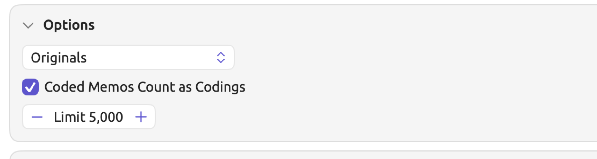
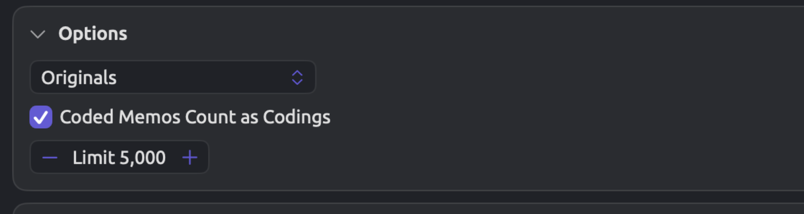
Running a query
Queries in a document, or in a set or project of moderate size, will rerun shortly after any change. LemmaLoom monitors when you pause while editing, then checks and reruns the query. As the query processes documents in a set or project, a progress ring next to Stop fills accordingly. The results appear incrementally, ahead of processing the last document.
Queries on sets, projects, and All Projects will run by themselves if their documents contain fewer than roughly 300,000 tokens (words and punctuation). Queries that require none of the text will run by themselves as well, as with Library · Codes. Keywords queries count the documents they compare with toward the 300,000 threshold. If a query goes beyond this threshold, then you will see a button in the results area labeled Run Query whenever changes occur. Click it, click the triangle icon in the query header, or choose Edit ▸ Run Query (⌘R). Large queries take varying amounts of time, depending on document sizes and your computer’s hardware.
Long queries can be stopped by clicking Stop, which ends their computation. Edit ▸ New Query clears the builder and keeps the unit, so you can rebuild the query from an empty Where condition.
When the conditions for running a query are not met, the triangle is disabled, and the results area displays one of the following messages. The violated rule appears with a red border around it, and hovering the mouse pointer over it reveals the reason. Incomplete appears only on the rule, because the query still runs.
| Message | Meaning | Runs |
|---|---|---|
| Incomplete | A rule has no value yet, or a text row has no terms. It is ignored until you complete it | Yes |
| Missing | A code, attribute, dictionary, every checked category, group, set, code set, project, or document the rule refers to has been deleted | No |
| Not available here | The field cannot be used in this scope, such as a document field in a document’s Query facet | No |
| Invalid pattern | A regular expression cannot be read | No |
| Pattern too long | A regular expression is longer than 1,000 characters | No |
| Too deeply nested | A rule lies more than three levels deep, such as under a context row inside a group (see Groups) | No |
| Too many nodes | A dependency pattern has too many words | No |
| Needs a set or project | A saved query that shows Compare or Keywords was opened in a document’s Query facet | No |
| Nothing to compare with | Keywords compares the scope with itself | No |
| No set chosen | Keywords is set to compare with a set, but none is chosen | No |
The Not available here message generally occurs when you load a saved query in a place it was not made for. A query based on the attribute “Stance” can be performed within the project level but produces this message in the Query facet of a document.
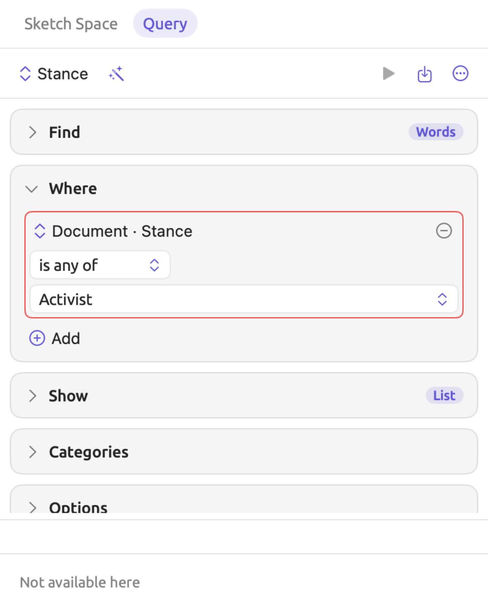
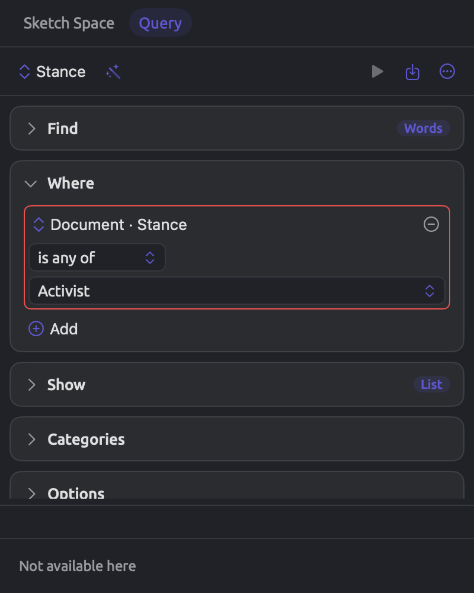
The Query Text condition
The Query Text condition shows the entire query written out in prose form, line-by-line, as illustrated for “Urgency Talk” in A first query above.
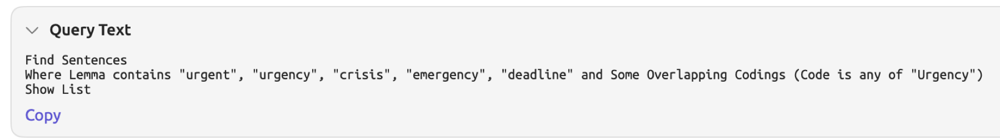
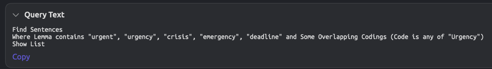
Read the query text to ensure that your question has been posed correctly, particularly in the case of queries with groups. All, Any, and None appear as and, or, and not respectively, with not followed by parentheses. If your query uses Count or Compare, its Group By keys and measure are added to the last line, such as Show Count By Lemma · Hits.
Use the query text for readability purposes, and for copying and pasting into research documentation like papers and research diaries; to change the query, change the conditions. Click Copy to place the query text onto the clipboard for insertion into other applications. Result exports retain the query text (see Exporting results in Chapter 16, Query Results and Statistics).
Saving queries
A saved query will keep its name, its conditions, and its owner or location, which determines where it will appear in the interface.
| Available In | Where the query is offered |
|---|---|
| Document | That document’s Query facet |
| Set | The set’s Queries view, the Queries window while it shows the set, and the Query facet of each document in the set and of its translations |
| Project | The project’s Queries view, the Queries views of its sets, the Query facet of each of its documents, and the Queries window while it shows the project or one of its sets |
| All Projects | Everywhere |
Queries should be saved wherever you plan on reusing them. Queries pertaining to the activists’ texts belong to the “Activists” set, while queries meant to be used across all sets and documents in a particular study belong to the project itself. All Projects is useful if you plan to reuse queries across studies (see Working across projects in Chapter 3, Projects and Documents). In the “Climate Debate” project, the “Activists” set has a query saved in it called “Keywords: Activists”, which comes from the Quick Start.

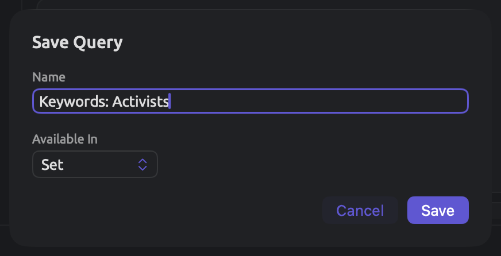
To save a query for the first time:
- Open the Save menu and choose Save As…. Save does the same for a query that has never been saved.
- In the Save Query dialog, type a name in Name.
- Choose where the query belongs in Available In. The menu offers the place you are in, then Project and All Projects, and the first is chosen for you.
- Click Save.
Once this happens, Save saves the changes on top of the saved version and the dot after its name disappears. Save As… makes a duplicate under another name. It is the same command to assign ownership of a query to another place. For a saved query, the menu also features Rename….
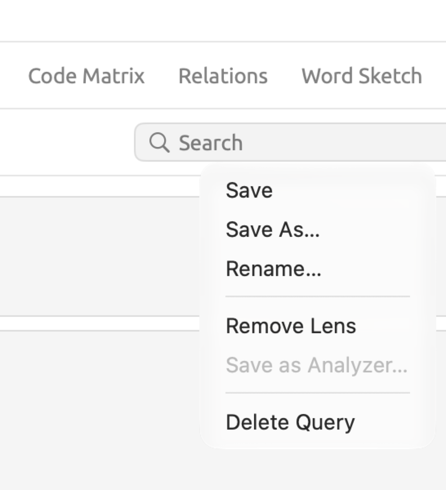
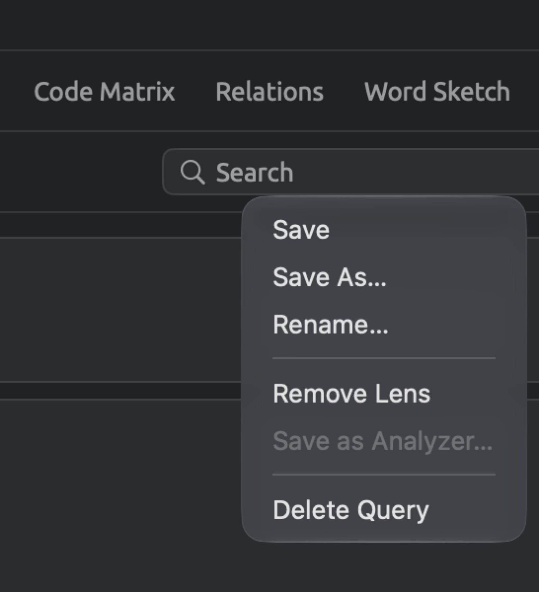
The Save menu includes three more options:
- Save as Lens… promotes the query to become a lens within the reader’s lens menu. When a new query needs saving before turning into a lens, it asks for its name and Available In through the Save as Lens dialog; a query already saved is saved with your changes and becomes a lens at once. Upon being made into a lens, the option now reads Remove Lens. Should a query fail to qualify for promotion to a lens, this option becomes disabled, and hovering the mouse pointer over this option explains the reason behind it.
- Save as Analyzer… transforms the query into a custom analyzer.
- Delete Query deletes the saved query while leaving an empty builder.
For more on how lenses and analyzers derived from queries behave, see Chapter 18, Using Query Results.
Saved queries may be opened by choosing them from the query’s name on the left end of the header bar, or by clicking them in the left column of a Queries view or the Queries window. Within the column, the queries are grouped under All Projects, Project, Set, and Document. Lenses show up with a pair of glasses next to their names. Typing a query’s partial name into the header bar’s search field will locate it amidst long lists of queries. Opening the query runs it immediately. Deleting queries within this column involves right-clicking the query followed by selecting Delete Query.
Steps including saving, renaming, deleting, making a query into a lens, or vice versa, are recorded as parts of the undo history. You undo them with Edit ▸ Undo (⌘Z); the menu item specifies the action, e.g., Undo Save Query. More details on undo can be found in Chapter 23, Undo and Redo.
Recipes
Recipes offer preconfigured queries that help answer basic research questions, including creating a concordance, generating a list of words, and querying codings based on an attribute. If you ever find yourself struggling with building a query from scratch, starting off with a recipe allows you to take a look at how conditions are filled out, allowing you to tweak things accordingly.
Upon loading into the builder, a recipe has its own name followed by a dot to indicate it is unsaved, and it is immediately executed in its default state. From there, you may modify and save a recipe as any other query.
Within a Queries view or the Queries window, the recipes appear below the saved queries under Recipes in the left column. In the Query facet of the inspector, open the Recipes drop-down (the wand) in the header. The list is divided into the categories Words, Grammar, Coding, Speakers and Time, and Documents and Library. Only recipes relevant to your current scope show in the list. Sets and projects display Passages Like a Code last under Recipes, giving a choice among the codes used in the scope.
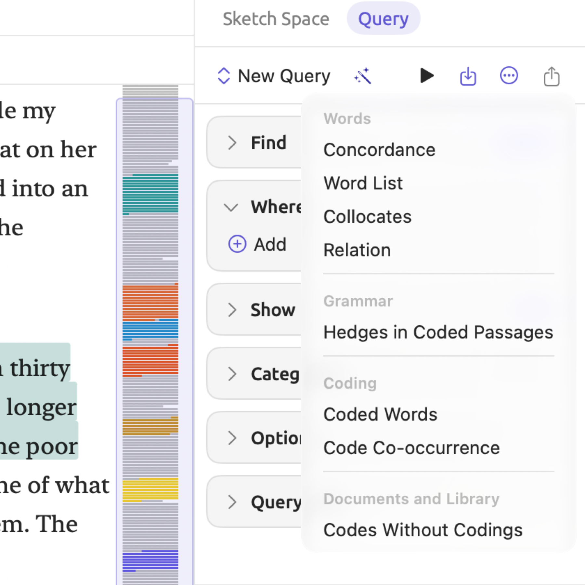
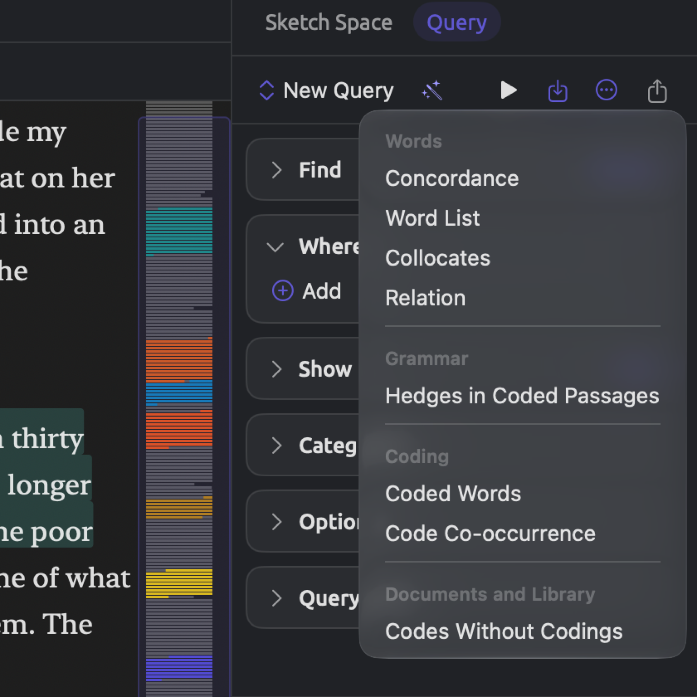
Recipes in Chapter 17, Query Patterns and Discovery provides the full list of available recipes, which includes descriptions of each recipe along with the query generated and scope of application. Passages Like a Code in the same chapter details this particular recipe.